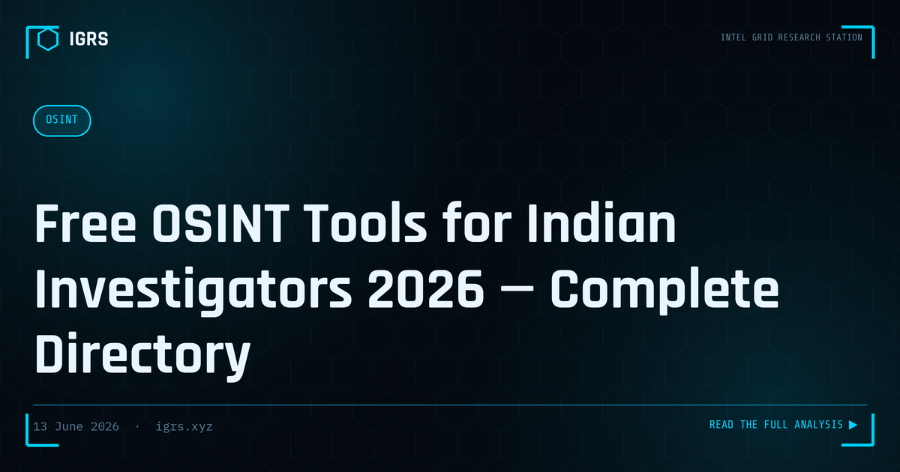

Free OSINT Tools for Indian Investigators 2026 — Complete Directory
Why Free OSINT Tools Matter for Indian Investigators
India occupies a unique position in the open-source intelligence landscape. The government has digitised an enormous range of public records — company filings, GST registrations, court cases, vehicle registrations, telecom data — and made much of it freely searchable. For investigators, cyber cells, journalists, and corporate due-diligence teams, this means a wealth of intelligence is available without expensive commercial subscriptions. The challenge is knowing which tool to use for which question. This guide maps the complete free OSINT toolkit for the Indian context.
Phone Number Intelligence Tools (Free)
The phone number is often the starting point of an Indian investigation, and several free tools extract intelligence from it:
| Tool | URL | What It Reveals |
|---|---|---|
| Truecaller | truecaller.com | Registered name, spam score, location hints |
| TAFCOP | sancharsaathi.gov.in | Number of SIMs registered on an Aadhaar |
| CEIR | ceir.gov.in | Device IMEI status (lost/blocked) |
| Eyecon / Sync.me | app-based | Caller ID and social linkage |
| WhatsApp / Telegram | app | Profile photo, about, last seen patterns |
A practical tip: send a Rs 1 payment request via a UPI app to a suspect number — the registered account holder name is often revealed in the request screen, a powerful free attribution technique.
Corporate and Business Intelligence Tools (Free)
India's corporate transparency portals are among the richest free OSINT sources anywhere. They reveal company ownership, directors, financial filings, and trade activity:
| Tool | URL | Data Available |
|---|---|---|
| MCA21 | mca.gov.in | Company registration, directors, charges, filings |
| GST Search | gst.gov.in | GSTIN verification, legal name, state, status |
| Zauba | zauba.com | Import/export shipment data |
| SEBI | sebi.gov.in | Market filings, registered intermediaries |
| IRDAI | irdai.gov.in | Insurance entity verification |
| EPFO | epfindia.gov.in | Employee provident fund establishment data |
Cross-referencing MCA21 directors against multiple companies is a classic technique for detecting shell company networks — the same individuals appearing as directors across dozens of dormant entities is a strong fraud indicator.
Domain, IP and Website Intelligence (Free)
For investigating phishing sites, fraudulent platforms, and malicious infrastructure, these free tools are indispensable:
| Tool | URL | Purpose |
|---|---|---|
| VirusTotal | virustotal.com | URL/domain/IP/file malware reputation |
| Shodan | shodan.io | Open ports, exposed services, server banners |
| URLScan | urlscan.io | Website screenshot, resources, redirects |
| crt.sh | crt.sh | SSL certificate logs, subdomain discovery |
| DNSDumpster | dnsdumpster.com | DNS records and infrastructure mapping |
| Web-Check | check.igrs.xyz | 33+ checks: SSL, DNS, headers, ports in one scan |
Court and Legal Records (Free)
Verifying litigation history and criminal records is a core part of due diligence and investigation in India:
| Portal | URL | Records |
|---|---|---|
| eCourts | ecourts.gov.in | District and High Court case status |
| Supreme Court | sci.gov.in | SC case status and judgments |
| NCRB | ncrb.gov.in | Crime statistics, missing persons |
| NJDG | njdg.ecourts.gov.in | National Judicial Data Grid |
Social Media OSINT Tools (Free)
Social platforms remain a primary intelligence source. These free tools help investigators extract maximum value:
- Sherlock / WhatsMyName: Hunt a username across hundreds of platforms simultaneously
- Social Searcher: Monitor mentions and keywords across networks
- Whopostedwhat.com: Keyword and date-based Facebook post search
- Twitter/X Advanced Search: Filter by date, location (geocode), and keywords
- InVID / WeVerify: Video verification and frame-level reverse search
- ExifTool: Extract metadata from images (where not stripped)
Image and Geolocation Tools (Free)
Verifying and locating images is increasingly central to OSINT, especially for countering misinformation:
| Tool | Best For |
|---|---|
| Yandex Images | Faces, landmarks, location matching (often best for India) |
| Google Lens / Images | General objects and text recognition |
| TinEye | Finding the oldest instance of an image |
| SunCalc | Shadow analysis for time and direction |
| Google Earth / Street View | Visual confirmation against satellite and street imagery |
Building a Free OSINT Workflow
Owning a list of tools is not the same as having a methodology. The investigators who get results follow a structured workflow: start with the seed data point (a phone number, name, domain, or image), enrich it through the relevant free tools, pivot on every new data point discovered, and document the chain of evidence as they go. The IGRS Intelligence Dashboard at igrs.xyz/dashboard.html unifies many of these lookups into a single free interface — IOC detection, hash generation, India quick references, and direct tool launchers — reducing the friction of switching between fifteen browser tabs.
The key advantage of mastering free OSINT tools in India is not cost savings alone; it is the speed and self-sufficiency of being able to extract court-grade intelligence from public sources without waiting on commercial subscriptions or third-party vendors. For frontline investigators, that independence is often the difference between a case that moves and one that stalls.
Legal and Ethical Boundaries
Free does not mean unrestricted. Indian investigators must operate within the boundaries of the IT Act, the DPDP Act 2026, and the principle of proportionality. Accessing public records is legal; using deception that breaches law, accessing private systems without authority, or aggregating personal data beyond a legitimate purpose can cross into illegality. Every OSINT action taken for an official investigation should have a documented lawful purpose, and personal data must be handled in line with data protection obligations. Responsible OSINT is both more ethical and more legally robust when the evidence reaches court.